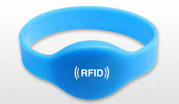

Pulseira RFID
Projeto desenvolvido para otimizar a marcação de presenças dos alunos.
Advon
Projeto desenvolvido afim de encontrar advogados de forma rápida e prática
TDE1
Construção de um curriculo usando somente HTML
TDE2

Criação de uma página web somente com HTML.
TDE3

Estilizando o HTMl da página css zen garden
TDE4
Desenvolvimento de um portifólio utilizando os conhecimento adquiridos